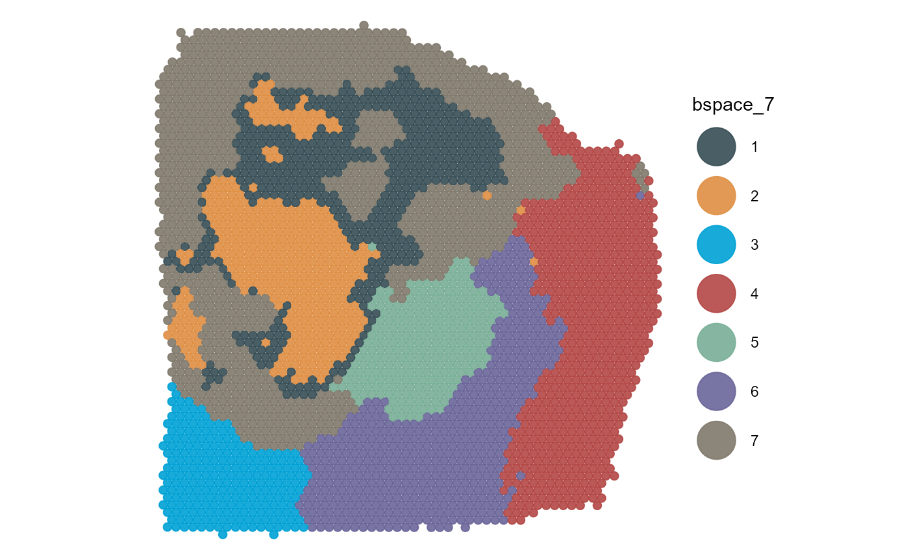
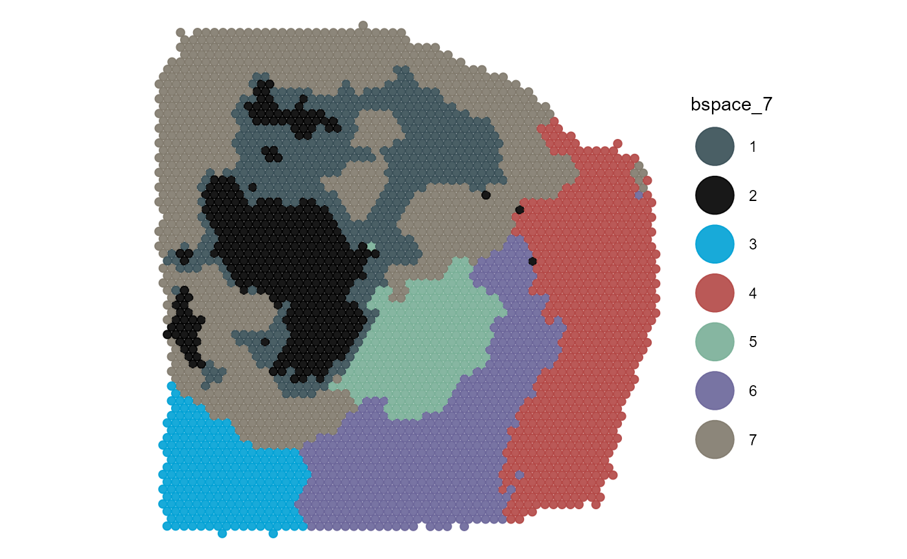
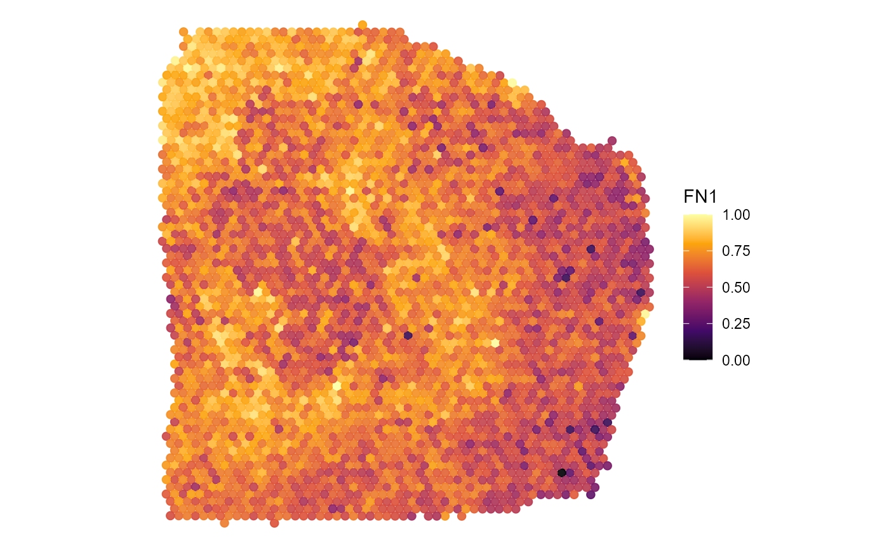
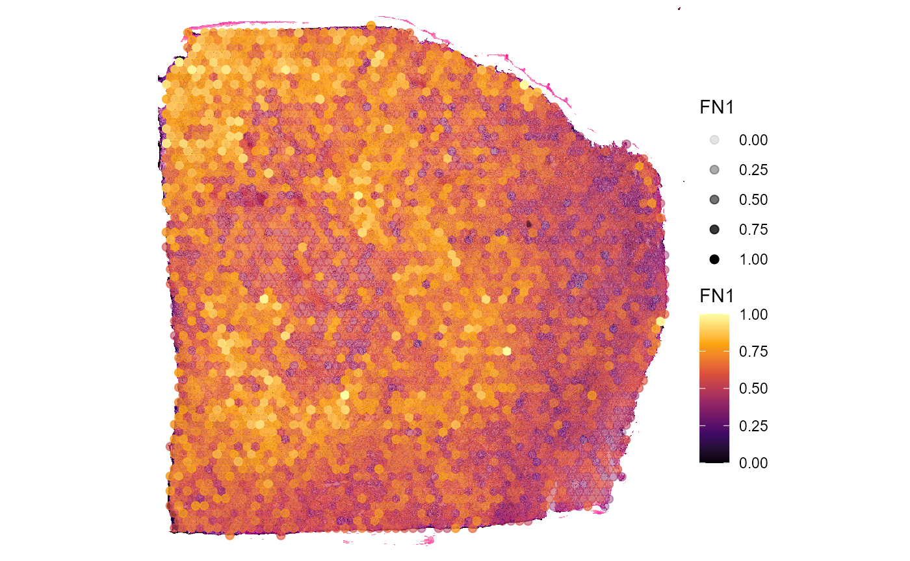
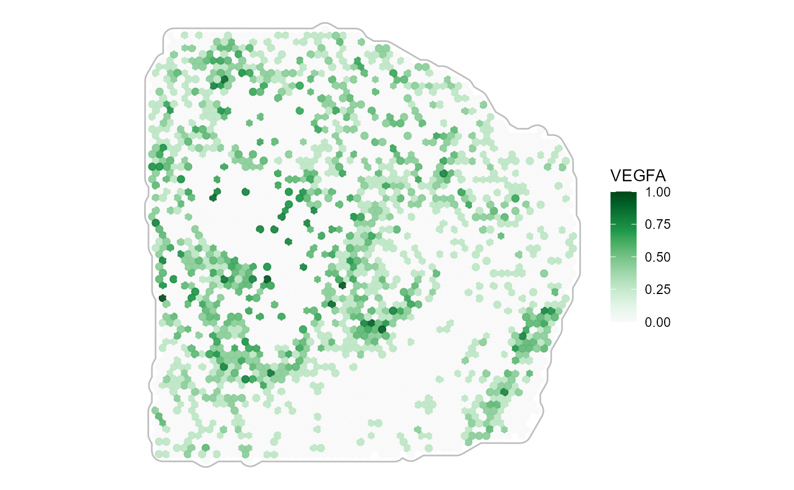
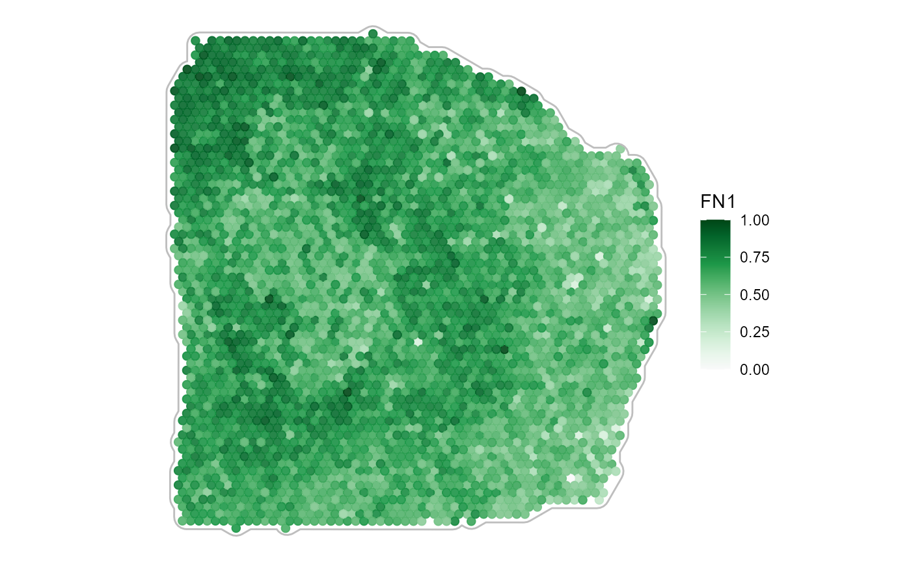
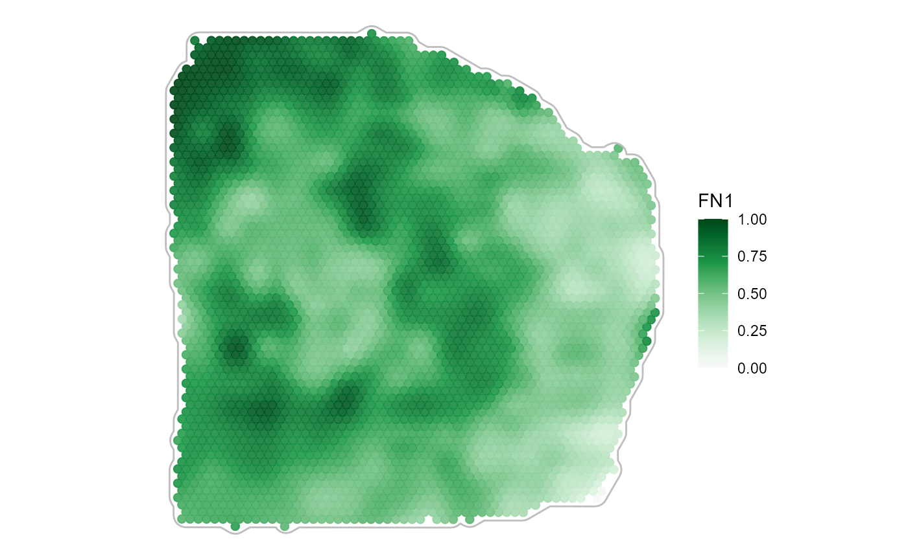

Surface Plotting
spata-v2-plotting-surface.Rmd2. Introduction
Surface plotting allows to visualize the barcode-spot’s information
with a spatial dimension. Behind the scenes they are scatterplots
whereby the x-aesthetic and y-aesthetic of the plot is mapped to the
respective coordinate-variable. SPATA2 offers a variety of
functions and options to visualize expression of genes or other
variables on the surface of the tissue sample.
library(SPATA2)
library(SPATAData)
library(tidyverse)
object_t313 <- SPATAData::downloadSpataObject("313_T", file = NULL)
object_t313 <- setDefault(object_t313, display_image = FALSE)
# load predefined clustering from package
data("clustering")
object_t313 <-
addFeatures(
object = object_t313,
feature_df = clustering[["313_T"]],
overwrite = TRUE
)
# load predefined spatial segmentation from package
# add yourself via createSpatialSegmentation()
data("spatial_segmentations")
object_t313 <-
addFeatures(
object = object_t313,
feature_df = spatial_segmentations[["313_T"]],
overwrite = TRUE
)
plotImageGgplot(object_t313)3. Basic surface plots one by one
The most important function to visualize gene expression on top of
the slide is plotSurface(). It comes with a variety of
options for the plotting of both, continuous and categorical data.
3.1 Categorical data
Categorical data includes usually grouping of spots via clustering or spatial manual annotation.
plotSurface(
object = object_t313,
color_by = "bspace_7",
pt_clrp = "jama"
)
plotSurface(
object = object_t313,
color_by = "histology",
pt_clrp = "npg"
)
Using pt_clrp you can adjust the color palette used to
display the groups. The following are predefined within
SPATA2 and can be used by referring to them by name.
Inspect them via showColorPalettes(). To adjust single
colors of groups use the clrp_adjust argument.
plotSurface(
object = object_t313,
color_by = "bspace_7",
pt_clrp = "jama",
clrp_adjust = c("2" = "black") # for single adjustments
)
plotSurface(
object = object_t313,
color_by = "histology",
pt_clrp = "npg",
clrp_adjust = c("necrosis" = "black", "vivid" = "forestgreen") # ... or for all
)
You can use the ggpLayerGroupOutline() function to
highlight the spatial extent of groups from the same or from other
grouping variables.
# creates ggproto objects that can be added via `+`
necrosis_outline <-
ggpLayerGroupOutline(
object = object_t313,
grouping = "histology",
groups_subset = "necrosis",
line_size = 1.5
)
cluster_outline <-
ggpLayerGroupOutline(
object = object_t313,
grouping = "bspace_7",
groups_subset = c("3", "5"),
line_size = 1.5
)
# plot with additional layers
plotSurface(
object = object_t313,
color_by = "bspace_7",
pt_clrp = "jama"
) +
cluster_outline +
labs(subtitle = "Cluster Outline")
plotSurface(
object = object_t313,
color_by = "bspace_7",
pt_clrp = "jama"
) +
necrosis_outline +
labs(subtitle = "Necrosis Outline")3.2 Continuous data on the surface
Continuous data, such as gene expression, gene set expression,
RNA-count etc. Albeit viridis spectra are a commonly used you
might want to try different ones. The color spectra implemented in
SPATA2 can be obtained via validColorSpectra()
and inspected via showColorSpectra().
plotSurface(
object = object_t313,
color_by = "FN1",
pt_clrsp = "inferno"
)
plotSurface(
object = object_t313,
color_by = "FN1",
alpha_by = "FN1", # use alpha, too
pt_clrsp = "inferno",
display_image = TRUE
) 
3.2.1 Variable transformation
The plot below does not look insightful due to the distribution of
the plotted variable. The argument transform_with allows to
perform mathematical transformation before plotting if needed. As
nCount_Spatial is not normally distributed you might want to
logarithmically transform it to better visualize important
information.
plotSurface(
object = object_t313,
color_by = "nCount_Spatial",
pt_clrsp = "plasma"
)
plotDensityplot(object = object_t313, variables = "nCount_Spatial")
plotSurface(
object = object_t313,
color_by = "nCount_Spatial",
pt_clrsp = "plasma",
transform_with = list(nCount_Spatial = log10) # named list with a function to apply
) +
labs(color = "Counts (log10)", subtitle = "No Outline")
plotSurface(
object = object_t313,
color_by = "nCount_Spatial",
pt_clrsp = "plasma",
transform_with = list(nCount_Spatial = log10) # named list with a function to apply
) +
labs(color = "Counts (log10)", subtitle = "Necrosis Outline") +
necrosis_outline3.2.2 Tissue outline
Color spectra that plot against white require to outline the tissue.
Use ggpLayerTissueOutline() for that matter.
# create tissue outline layer to plot against white
tissue_outline <-
ggpLayerTissueOutline(object = object_t313, line_color = "grey")
plotSurface(
object = object_t313,
color_by = "VEGFA",
pt_clrsp = "Greens 3"
)
plotSurface(
object = object_t313,
color_by = "VEGFA",
pt_clrsp = "Greens 3"
) + tissue_outline
3.2.3 Spatial smoothing
Smoothing of continuous variables is possible, too. Use
smooth and smooth_span for that matter.
plotSurface(
object = object_t313,
color_by = "FN1",
smooth = FALSE, # the default
pt_clrsp = "Greens 3"
) +
tissue_outline
plotSurface(
object = object_t313,
color_by = "FN1",
pt_clrsp = "Greens 3",
smooth = TRUE, # the default
smooth_span = 0.2
) +
tissue_outline
4. Surface plots interactive
Another more convenient way is to use
plotSurfaceInteractive() which let’s you plot your figures
interactively and way quicker. It returns a named list of all plots
saved during your plotting session.
object_t275 <- downloadSpataObject("275_T", file = NULL)
# open application to obtain a list of plots
plots <- plotSurfaceInteractive(object = object_t275)

# get plot names
names(plots)## [1] "hypoxic_area" "metrn_high"
# plot plots from returned list
# treat and post-process them like every other ggplot-object
plots$hypoxic_area
plots$metrn_high 5. Surface plots in comparison
In order to quickly compare the spatial distribution of a set of
variables of the same kind use plotSurfaceComparison().
# compare gene expression on the surface
plotSurfaceComparison(
object = object_t313,
color_by = c("CSTB", "FN1", "MYL6", "CCL2"),
pt_clrsp = "Greens 3",
display_image = TRUE,
smooth = TRUE,
alpha_by = TRUE
)